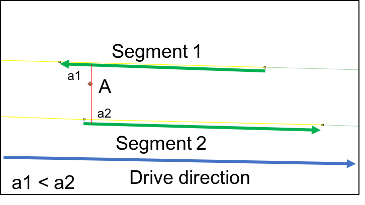

Vehicle Miles Travelled Estimation using Big GPS Trajectory Data
|
In colloboration with NTC , BATTELLE. CGIS group uses big geospatial data computing techniques to reconstruct vehicle trajectories from GPS waypoints and match constructed trajectories onto each road segment. |
||
|
Uncertainty in GPS positioning, simply using nearest segment to snap the waypoint is problematic |
|
|  |

|
|
Large and irregular time intervals between two waypoints (1~2mins) may cause gaps between road segments in the same trip. |
|

|
VMT estimation results of local roads in Maryland

Ongoing research...